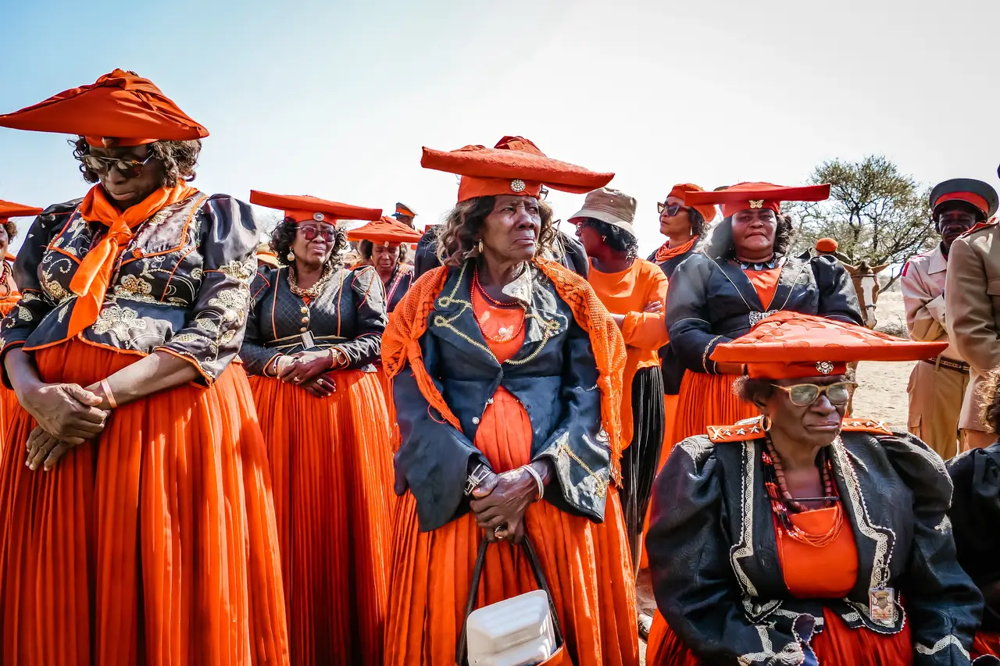
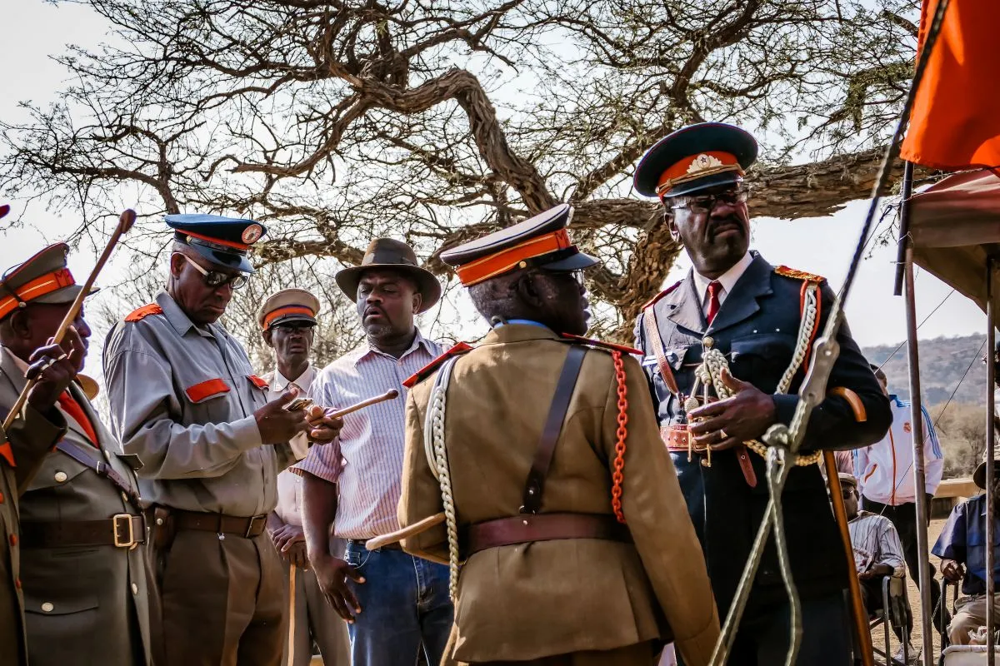
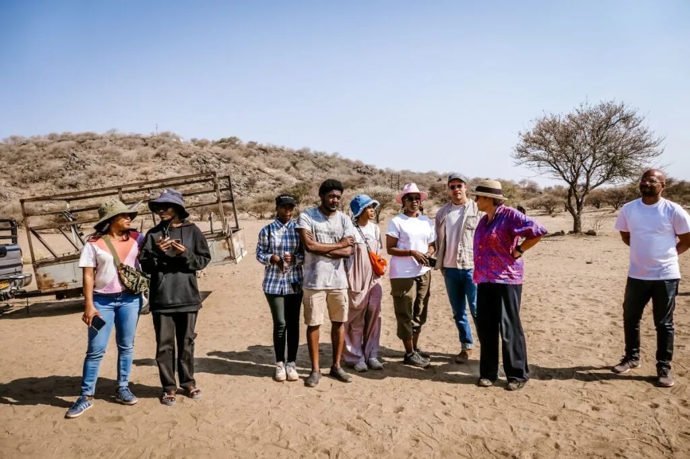
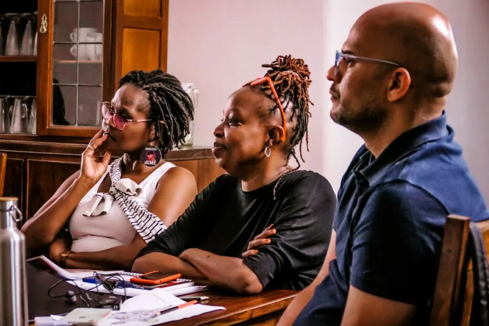
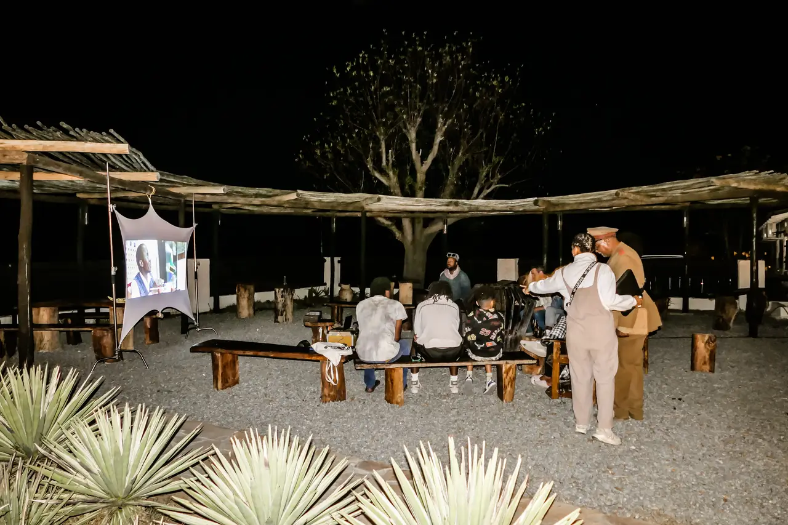
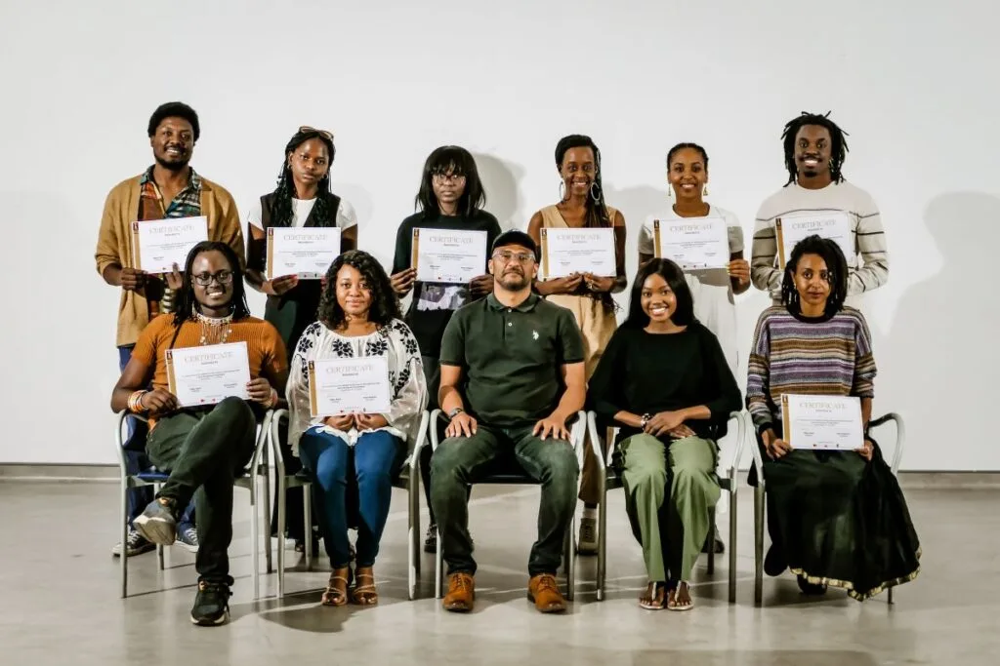
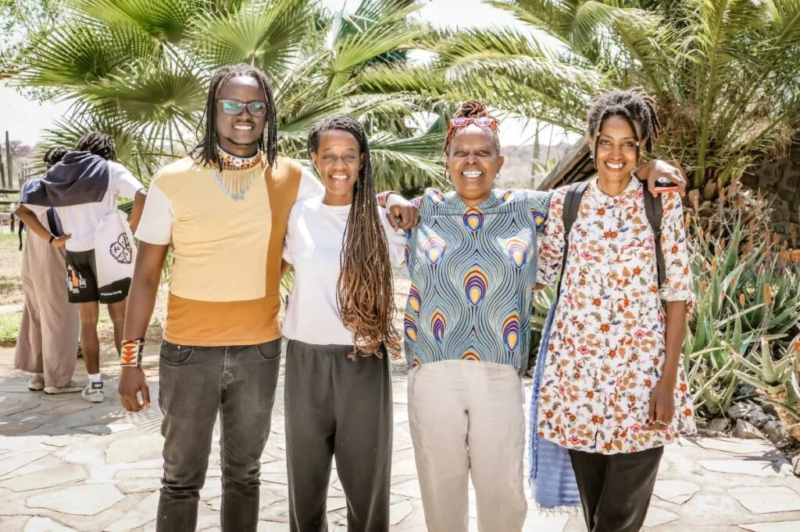

Writing about Return to the Source (RTS) has been a slow, deliberate process. The interviews began in April 2025, several months after the residency took place in Namibia in September 2024. The process of shaping this piece unfolded slowly, punctuated by false starts, shifts in structure, and long pauses to sit with what had been said. Like assembling a complex puzzle, each revision uncovered new pieces that needed to fit together, sometimes requiring complete restructuring of what seemed already in place.
Some of that delay was logistical, some professional, but much of it reflected the nature of what RTS had been in the first place: a refusal to rush, to output, or to summarize. If this piece holds any of that spirit, it's because the time it took was part of the process. It was never just about reporting on what happened. It became a way to hold it again.
I've mentioned this project in scattered newsletters over the past few months, often in passing, never with much detail, but always with the sense that something was coming. This is that something.
However, even now, I wouldn't call it "complete." Like RTS itself, this piece could have taken any number of paths. Deciding which one to follow was part of the process, and the result isn't wrapped up in a tidy bow at the end.
A Pan-African Film Lab in Namibia

In early September 2024, filmmakers and cultural workers from across Africa gathered in Namibia for "Return to the Source: Pan-African Film Lab & Residency," a five-day program that brought the practice of cinema into direct engagement with sites of colonial history. The residency unfolded between Windhoek, Namibia's capital, and Ovitoto, a rural settlement tied to the Herero genocide of the early twentieth century. Its design combined historical site visits, oral testimony, masterclasses, outdoor screenings, and collaborative filmmaking.
The initiative was organized by Old Location Films, the Namibian company founded by Perivi Katjavivi, together with Mucii Pictures, a Kenyan outfit established in 2022 by producer Fibby Kioria. Katjavivi is both a filmmaker and a scholar, known for "Under the Hanging Tree" (2023), which became Namibia's first Academy Awards submission. Kioria has played a central role in Pan-African training initiatives, including her leadership of Maisha Film Lab in Uganda.
Funding came from the Mastercard Enablement Programme, a fellowship mechanism linked to the Berlinale Film Festival in Germany, as well as from the Goethe-Institut Namibia in Windhoek, and from the Namibia Film Commission. Additional support came from Helen and Peter Warwick, New York City–based arts patrons and the residency's sole private donors.
From the outset, the two co-founders stressed that autonomy was crucial. "With this Mastercard money, we could start to dream about what an African lab looks like when there's no donor telling us we've got to train poor kids in Africa, or that it has to happen in northern Uganda, not in the capital city," Kioria said. "Just something we design ourselves, listening to ourselves, listening to the ground, listening to what really matters to us."
Unlike many film training schemes that center on technical instruction, Return to the Source placed history and memory at its core. It was designed less as a skills lab than as a residency where the act of filmmaking would be inseparable from historical engagement. Participants were not only trained to shoot and edit; they were asked to work with oral historians, local elders, and sites of trauma to interrogate how cinema can serve as a tool for remembrance.
For Tanzanian filmmaker Cece Mlay, the lab came at exactly the right moment. "I had zero expectations, and I'm glad that I didn't, because the way the lab was run came at a very beautiful time. I had just started doing Q&As for 'The Empty Grave' and hadn't had a moment to breathe or think about the impact of what we'd been dealing with. The lab came when it was primed for me to start unpacking some of that."
The name "Return to the Source" carries a distinct history. It was the title of a 1973 posthumous collection of speeches by Amílcar Cabral, the Cape Verdean and Guinea-Bissauan revolutionary who shaped both the independence struggle in West Africa and the intellectual foundations of Pan-African liberation thought. The phrase became shorthand for his insistence that reclaiming cultural knowledge was inseparable from political transformation. The residency did not cite Cabral directly, yet his ideas were implicit: land as record, history as method, culture as continuity.
Namibia, Germany, and the Question of Restitution
The context in which the residency took place cannot be understood without reference to the genocide carried out in Namibia by German colonial forces between 1904 and 1908. During this period, the Herero and Nama peoples were subjected to mass killings, forced displacement into the desert, and confinement in concentration camps. Historians estimate that up to 80 percent of the Herero and 50 percent of the Nama population were killed.

This genocide is often cited as one of the first of the twentieth century.
Germany administered Namibia — then called German South West Africa — as a colony from 1884 until the end of World War I, when South Africa assumed control under a League of Nations mandate. During this time, tens of thousands of the Herero and Nama were killed. The survivors lost land, livestock, and social structures that had previously sustained their communities. Human remains, including skulls and bones, were shipped to Germany for pseudoscientific racial studies, a practice that has become central to restitution campaigns in recent years.
For decades after Namibia's independence in 1990, the genocide was a politically contested subject. It was only in 2015 that Germany and Namibia formally began negotiations over recognition and reparations. In 2021, the German government acknowledged the atrocities as genocide and pledged €1.1 billion in financial support for reconstruction and development projects in Namibia, to be disbursed over 30 years. The agreement was presented as a gesture of reconciliation, but it has been widely criticized. Representatives of Herero and Nama communities argued that they were excluded from the negotiations, which were conducted primarily between the two governments. The funds were also structured as development aid rather than reparations, a distinction that carries legal and symbolic weight.
Restitution has also involved debates over the return of cultural objects and human remains. In recent years, German museums and universities have returned some remains of Herero and Nama individuals, but demands for full restitution of all human remains and colonial-era cultural artifacts remain unresolved. Activists have also called for Germany to formally engage with affected communities in Namibia, rather than treating restitution as a matter of state-to-state diplomacy.
Against this backdrop, Return to the Source positioned itself not as a political negotiation but as a cultural intervention. By bringing filmmakers to sites like Ovitoto, the program connected local landscapes of trauma with the larger debates about memory, responsibility, and restitution that continue between Namibia and Germany.
For Mlay, the resonance went beyond Namibia: "Tanzania and Namibia's colonial history with Germany mirrors each other. There was even a general sent from Tanzania to enact the same kind of violence in Namibia within ten days. Walking through the landscape with Uncle Gottlieb, seeing the graves of German soldiers but not of the resistance fighters, mirrored exactly what we see in Tanzania. That was very humbling, because it reminded me how intertwined our histories are."
Katjavivi put it more bluntly: "Colonialism and genocide are very cool right now. Everybody's obsessed with it. But these words mean nothing if they're just thrown around. With RTS, I wanted us to subvert that. To do something different, to go under the surface of it, not to stay at the level of slogans."

Ethiopian filmmaker Hiwot Admasu brought another perspective. "As an Ethiopian, I felt like an outsider to the experience. Ethiopia has never been colonized, so I didn't share the same background of German colonial history. Listening to Namibians and Tanzanians speak, I felt I had to listen more than speak. It was a big lesson, realizing how different the perspectives on colonialism are across Africa, and how much we can learn from each other."
Namibian participant Justin Hango described the intensity of this space: "It was a battle of emotions every day because of its high stakes. People were talking about a genocide that happened in Tanzania, and the criminal was the same perpetrator we had here in Namibia. Tears were flowing, emotions were real. I was the only actor, so nobody was faking tears."
For Esther Beukes, the resonance was personal: "I almost felt a bit out of place. The work that I do doesn't necessarily explore the past in the way RTS did. But it was a good challenge, because my tribe, the Ovaherero, were directly involved. I thought it was important to reconnect with my ancestors. Hearing stories about direct relatives of mine while I was there — I didn't expect that."
Annina Van Neel, the Namibian heritage activist whose story is at the center of the documentary "A Story of Bones," later contrasted RTS with the absence of memory in official spaces: "After the lab I went to Lüderitz, where survivors of the genocide were imprisoned. Right next to that site is a five-story maritime museum — the biggest in Africa — and there is no mention of colonialism, slavery, or the genocide. Worlds apart from what we had just created together at Return to the Source."
Namibia today still feels cut off from the circuits that shape global cinema. "Namibia is a bit of an isolated place," Katjavivi said. "For filmmakers or artists here, it's hard to plug into the rest of the world or even to know what's happening on the continent. I grew up on a diet of Hollywood and M-Net. You have to dig to find African films, Black films, Asian cinema, arthouse cinema. That digging became part of how I understood film."
Structure of the Residency
The program unfolded over five days, each with a distinct focus but tied together by the core methodology of working with history as a living archive.
The selection procedure? Kenya's Saitabao Kaiyare, co-founder of Baruu Collective and a lecturer at Pwani University, described how he was invited in: "There was no application process. Fibby approached me based on my previous work on decolonising history and culture. She felt it would be a good integration into the lab."
The opening day situated participants in Ovitoto, with guided tours and oral histories delivered by community elders and historians. Rather than beginning with lectures in a classroom, the lab began by placing filmmakers in physical sites tied to memory. In the evening, participants and local audiences attended an outdoor, solar-powered screening of "A Story of Bones," a documentary on the African Burial Grounds on Saint Helena Island. This was made possible in partnership with Sunshine Cinema, Africa's first solar-powered cinema network, whose Sunbox initiative enables screenings in rural areas without electricity. Their collaboration spoke to RTS's commitment to working with like-minded organisations innovating around access and sustainability.
For Van Neel, whose personal story is at the center of that film, this was also an introduction: "I moved to St. Helena in 2012 to work as an environmental officer. Part of my work was to excavate the African burial grounds where close to 10,000 enslaved Africans are buried. That experience changed me. Film came into my life when British filmmakers followed my story, and our documentary 'A Story of Bones' was released in 2022. Since then, I've used the film to engage descendant communities on heritage and memory."

She recalled how RTS amplified this work: "Being in that space, where Germans had poisoned wells, at the same time Namibia was going through a drought, was a powerful connection. Listening to the elders, screening under the trees with the community, surrounded by fire and song — that was unforgettable."
Subsequent days combined workshops on African film genres, low-budget production strategies, smartphone filmmaking, and field sound recording with further screenings. Katjavivi presented "Under the Hanging Tree," his 2023 feature on Namibia's colonial past, while Tanzanian filmmaker Cece Mlay screened "The Empty Grave," a documentary on the politics of unreturned ancestral remains.
Mlay explained that the archival sessions were transformative: "The focus on where we get our archival materials was something that was touched on in the lab — not just what the material is, but how you interpret it, what that interpretation does to you, and how you look at the communities where those sources come from."
For Beukes, that process took on personal resonance: "Walking on the sites, seeing the German graves so fancy and the Herero graves just piles of rocks — that bothered me. What really excited me was going to the archives, listening to the recordings, looking at the photographs. Later, I went back and actually found a picture of my grandmother. That was special."
For Kioria, the program was also about creating a space for healing: "For me, the lab was an invitation to understand certain things. Saying yes to questioning how we've been programmed to think generationally. For many of us, we don't even know what it is to create because of institutions, religion, society. This gave us permission to question that."
Admasu echoed this sense of unexpected transformation: "I went in curious. For me it felt like a movement, not only of African creatives but of humanity."
Hango also emphasized the role of care: "When people said 'safe space' in the first days, I didn't realize how important that was. Especially when unpacking topics like this.
Munyama reflected on the unexpected depth: "The experience was very visceral. I walked away with more than I thought I would."
Participants spent substantial time shooting short works in collaboration with local community members. These films were produced not as exercises in style but as direct engagements with landscapes tied to colonial atrocities.
Facilitators guided this process from different perspectives. Khalid Shamis, who runs Rough Cut Lab Africa in Cape Town, a continental initiative for post-production support, emphasized the collective nature of editing: "The process was about letting go of authorship. Everyone was feeding into each other's work. For me, RTS was about filmmakers building trust with communities, and with each other, without being under pressure to make a product for the market."
Marcella Katjijova, a psychological counsellor with a BA in Psychology and extensive experience in trauma support, youth counselling, and community health with Namibia's Ministry of Health, explained the importance of care: "We spoke a lot about what it means to hold space for trauma. Having a therapist there wasn't just symbolic — it allowed people to decompress, even in silence. Something as simple as coloring for 30 minutes created release. RTS made room for that."
Dr. Nashilongweshipwe Mushaandja, a performance scholar and artist at the University of Namibia, framed the program within embodied practice: "Archives are not only paper documents or images. They are in the body, in song, in dance, in place. At RTS, we treated landscape itself as archive. That changed the way participants thought about film — less about recording reality and more about being accountable to memory."
As Katjavivi explained, "I'm very conscious of how we frame things. On the surface, maybe people thought RTS was just another colonial or genocide project. Some were put off. But once inside, they realized it was something else — a place to ask who we are and what we're building. The history was context, but it wasn't the point. The point was creating a space where people could feel seen."
The residency concluded with screenings of the participants' films, accompanied by group reflections and discussions.
Participants and Facilitators

The lab gathered a diverse group of participants from across the continent. From Tanzania came Cece Mlay, whose work as assistant director at Kijiweni Productions has included both fiction and documentary; she is now pursuing her directorial debut feature. Ethiopia was represented by Hiwot Admasu, a filmmaker active since 2015. "I grew up in the Ethiopian Orthodox Church, writing poems and theatre from the Bible. Later, I studied electrical engineering, but I knew film was my space," she said. "By the time I was recommended for Return to the Source, I had done so many labs and workshops that I didn't want to do another. At first I refused. Then I realized this wasn't just a film lab. It felt different, beyond film."
Kenyan Saitabao Kaiyare described his practice: "I've been a filmmaker for the last 12 years. I like doing work that rethinks and reimagines the African narrative. I consider myself a Pan-Africanist — in my films, I try to dig into the past, find the beauty and the culture, and also show a bit of positivity of African people on screen. It's more of a celebration through culture, diversity, and empowerment."
Namibia itself was strongly represented, with participants ranging from visual artist and director Shili Munyama, preparing his first feature "Wrong Generation," to student filmmakers such as Kalundu Leslie, alongside production designer and director Hilma Sheehama, poet Veripuami Kangumine, and actor Justin Hango.
Munyama reflected: "I was doing a double major in law and politics at university, then decided to pursue film instead. I started with photography, then moved into video. I freelanced, did corporate work, and in 2020–2023 began developing a short film that may become my first feature. I also work as a creative director for a magazine, influencing the next generation of creatives."
Beukes added: "I started in the industry when I was 16, as a makeup artist for a music video. I wasn't really a makeup artist — just fixing my friend’s face — but that’s how I got exposed. Since then, I’ve never looked back. I love to create and bring people together."
Hango also on his path: "I think I was the only actor there. It did feel a bit strange, but as a collective, we did great work. I didn’t expect to learn so much from the other filmmakers, and I didn’t expect to follow Africans as closely as I do now, just from having that connection."
Facilitators gave the residency its distinct orientation. Shamis anchored the editing and collective storytelling sessions. Mushaandja expanded the notion of archive to include performance and embodied memory. Marcella held psychological space, ensuring care and decompression were part of the process. While oral history was led by local community leader Gottlieb Kazombiaze. Each role shaped RTS differently, but together they created a space that blurred boundaries between film, history, therapy, and performance.
Positioning Against African Film Labs and Residencies
Return to the Source does not exist in isolation. Across Africa, a patchwork of labs, markets, and development platforms has grown over the past two decades, each with its own orientation.
Maisha Film Lab, founded in 2004 by filmmaker Mira Nair in Kampala, Uganda, was one of the longest-running. Its emphasis was on script development, directing workshops, and professional mentorship for East African filmmakers before closing down in January 2021, a direct result of COVID-19-related disruptions. Alumni have gone to direct features and series, but the model was oriented toward connecting writers and directors to international co-production and festival circuits.
Ouaga Film Lab, based in Burkina Faso since 2016, was established as a space for project development with a Francophone Ouaga Film Lab, founded in Burkina Faso in 2016 as a space for project development with a Francophone African focus, was rebranded in 2024 as Les Ateliers de Grand-Bassam. Its workshops emphasize pitching, producer training, and access to international funds. Originally operating in close connection with FESPACO, Africa's largest film festival, the lab has leveraged that platform to give participants visibility with European and global industry stakeholders.
Talents Durban, a satellite of the Berlinale Talents program, has run since 2008 in South Africa in partnership with the Durban International Film Festival. Its purpose is to identify emerging directors, producers, screenwriters, and film critics from across Africa and provide them access to international mentors and festival programmers. The orientation here, too, is toward integration into global professional circuits.
Other initiatives, such as Ateliers de l'Atlas in Morocco (linked to the Marrakech International Film Festival) and Durban FilmMart in South Africa, operate as co-production markets rather than residencies. They function as transactional spaces where African projects are pitched to potential funders, broadcasters, and sales agents.
What distinguishes Return to the Source from these models is its deliberate departure from market logic. Where other labs emphasize pitching and industry access, RTS focused on history, community, and embodied practice. "I think it's a unique space in which, as a practitioner, you're allowed to just go there and dream," Mlay said. "A lot of labs these days require a concrete output — you need to come out with a project ready for the market. But there also needs to be a space to ideate, to marinate, to interact with the story you want to tell, and to think about what that story is doing to you as the creative."
Admasu felt the same shift: "It didn't feel like a film lab. It felt more like a spontaneous, almost spiritual retreat. For me it felt like a movement, not only of African creatives but of humanity."
Kaiyare added: "RTS is returning to your history, your identity, who you are, and understanding the complexity of our history. It's about deconstructing and decolonising, looking with a different lens and asking yourself: how did we get here, what do we do next, how do we move forward?"
Global Industry Positioning
The residency's connection to Berlinale was not peripheral. The Mastercard Enablement Programme, which funded RTS, is administered under the umbrella of the Berlinale, one of Europe's largest public film festivals. The festival has in recent years expanded its focus on Africa — not only through programming but also by positioning itself as a hub for training and professional exchange. Supporting RTS allowed Berlinale to extend its reach into Namibia while backing a project that foregrounded memory and restitution, issues that are increasingly visible in European cultural debates.
The involvement of the Goethe-Institut Namibia linked the residency to Germany's global cultural diplomacy network. The Goethe-Institut, which operates in more than 90 countries, has a dual mandate: to promote German culture abroad and to support cultural exchange. In Africa, Goethe-Institut has funded residencies, festivals, and labs in multiple countries, but the Namibia partnership was uniquely sensitive given Germany's colonial history in the country. The presence of its global president, Prof. Dr. Carola Lentz, at RTS was a symbolic recognition that cultural programming cannot be separated from restitution debates.
The participation of European museums and scholars further positioned the lab in global currents. Marion Ackermann, General Director of the Dresden State Art Collections, joined the program at a time when German museums are under scrutiny for holding collections acquired during the colonial era. The return of the Benin Bronzes to Nigeria in 2022–2023 has intensified pressure on European institutions to act on restitution. By engaging directly with a Namibian residency rooted in colonial memory, German institutions were signaling awareness that film and cultural production are also part of this debate, not only objects in museums.
Van Neel sharpened this point: "Return to the Source was a safe and brave space to confront how memory and peace can also be weaponised. Namibia is seen as a land of peace, but if you are on the wrong side of that peace — where your silence or your history is erased — it can be violent."
For Kioria and Katjavivi, RTS was never reducible to an institutional gesture. "When I left the lab, I broke down on the plane," Kioria recalled. "I had been holding space for those three or four days. It was heavy, unlike anything I've experienced. You think you can go into these things unaffected, but you are affected. People showed me care, asking if I'd sat down, if I'd eaten. That care came back to us from the group."
Mlay stressed that RTS was distinct because of its ownership: "Now that we have a lot of films coming out on colonialism and the discourse on decolonising spaces, one of the most unique aspects about Return to the Source is that it is being done in practice. We were meeting across borders, sharing histories and ways of seeing, without needing to explain ourselves to people who don't know where the story is from."
A Comparative Departure

The positioning of RTS also departs from a longer history of how African filmmakers have been engaged by European institutions. During the colonial period, African subjects were filmed almost exclusively by European ethnographers and administrators, their images catalogued in archives across Berlin, Paris, and London. The filmmakers themselves were absent; Africa appeared primarily as an object rather than as author.
In the post-independence decades, African cinema began to be included in European festivals, but often under separate "African sections" or "Third World cinema" banners, cordoned off from the main programs. Festivals such as Cannes, Berlin, and Venice programmed African films intermittently, while maintaining structures that treated them as peripheral to the core of world cinema.
Labs and training schemes that involved African filmmakers were historically designed with a one-way orientation: to prepare them for access to European funding and festival exposure, often with little regard for local contexts of exhibition or community engagement. The standard path was to enter a lab, develop a project to the level of an international co-production pitch, and then seek recognition from European funders and festivals.
Return to the Source offered a structural departure. Instead of preparing filmmakers to appeal to external markets, it asked them to work within Namibian history, geography, and community. Rather than placing African cinema into a European institutional frame, it brought European institutions into a Namibian frame — into conversations shaped by local histories and oral traditions. In this way, the residency inverted the usual dynamic, centering African memory and authorship while making global institutions the ones required to adapt.
Shili Munyama described this exchange as deeply connective: "Return to Source for me was on multiple fronts. As much as it is creative, I always link the creative to the spiritual. It felt like returning to our own ancestry, folklore, and archives. It ignited a sense of purpose, linking my creative work with what I want to put out into the world."
Saitabao Kaiyare added, "For me, as an East African from Kenya, it was very interesting to learn about the resistance in Namibia against the German colony. Some of this history wasn't properly documented — it was more passed down through oral tradition. Talking to Namibians and local communities was mind-blowing."
Mushaandja pushed this further: "African knowledge systems have always been there, but they have been silenced. What RTS did was to let filmmakers practice within those systems — not as decoration, but as methodology. That challenges how film schools, festivals, and archives usually treat Africa. It was about shifting who sets the terms."
Closing Industry Implications
The RTS model carries implications for the future of labs, for funders, and for how Pan-African film infrastructure is imagined.
For future labs, RTS demonstrates that industry training does not need to be narrowly defined by pitching markets or technical instruction. Labs can also be built around cultural history, oral tradition, and place-based practice. This is not simply an artistic choice but an infrastructural one: if African cinema is to grow on its own terms, its development programs must be allowed to define value beyond marketability.

For funders, the residency is a test case. Many African labs and markets operate with donor support that prioritizes exportability and co-production readiness. RTS suggested a different model — one in which funders engage with community, memory, and restitution as valid outcomes. Supporting projects that may never reach traditional distribution markets but contribute to cultural sovereignty requires a shift in funding criteria. Mastercard's backing through the Berlinale indicates that some institutions are beginning to experiment, but whether this approach will be sustained remains an open question.
For Pan-African film infrastructure, RTS adds a new dimension. Existing platforms are essential, but they work largely within an industry logic. RTS pointed to a complementary strand of infrastructure: residencies grounded in local histories and communities that can exist alongside market-oriented labs. A sustainable African film ecosystem may depend on the coexistence of both — spaces where filmmakers can train for global markets and spaces where they can work in relation to their own histories and audiences.
As Mlay put it, RTS also addressed the well-being of participants in ways other labs often overlook: "I was most impacted by the fact that they had somebody there looking after us on the mental aspect. For creatives dealing with histories like these, the triggers can shape the course of your career. There aren't enough spaces for filmmakers to have that kind of rest and creative play — to imagine a story, no pressure, just to be at your own pace."
Admasu echoed this emphasis: "What impressed me most was the level of knowledge and kindness in the room. Namibians were very caring, very well informed. It felt like meeting people heart to heart, not as victims but as empowered. It showed me that the process itself was the end goal — it wasn't about making a film, it was about going through this experience together."
For Beukes, the experience provoked deeper reflection: "I wasn't angry. Even though I'm a direct descendant of the people we were talking about, I wasn't angry. My biggest takeaway was asking myself: why? Why aren't you angrier?"
Hango countered with his own perspective: "As Africans, part of accountability is being truthful. Returning to the source is pulling off scabs, but the wound hasn't healed. There might be a little blood here and there, but you still have to remove it. For me it's about owning that authenticity — staying steadfast in the truth of what the moment is."

He also spoke about carrying this work forward: "I'm working on 'Behind Closed Doors,' an exhibition piece on gender-based violence in Namibia. We have a pandemic here. The work can't solve it, but it can shine a light on it. That's part of what returning to the source means — making sure we're accountable to our own communities."
Shili added a structural perspective: "Collaboration is going to be one of the most important things in Pan-African creativity. Namibia, as a young country, hasn't experienced the global creative market as much as South Africa or Nigeria. But it can provide a space where African creatives can come and grow. Nobody is coming to save us — we have to do that ourselves, together."
For the facilitators, RTS raised questions of sustainability. Shamis noted, "It showed that collective filmmaking and collective editing can be a pedagogy, not just a method. The challenge is whether institutions will support that as seriously as they support markets."
Marcella reflected: "Care can't be an afterthought. If RTS showed us anything, it's that filmmakers dealing with traumatic histories need structures of support built into the process. That should be as normal as bringing in a cinematographer."
Mushaandja emphasized the broader stakes: "This is not just about film, but about pedagogy and performance. RTS is part of building African institutions of memory. If funders and festivals want to engage with Africa, they must also fund these processes of remembering and making together."
In the long term, RTS also challenges international institutions. If European funders and festivals want to play a role in African cinema, they must accept not only films but also processes defined in African contexts. The presence of the Goethe-Institut, Berlinale, and German museums in Namibia during this residency was a signal that some institutions are willing to step into this space. The question is whether they will treat it as an isolated gesture or integrate it into how they structure ongoing partnerships.
Beukes's institutional role also adds weight to RTS's ripple effects: "I've just been appointed chairperson of the Namibia Film Commission. We promote Namibia internationally as a destination and support local filmmakers with a fund. I'm lobbying for better policies around filmmaking in Namibia, hoping to influence how we support artists on the continent."
The question now is whether RTS will remain an isolated experiment or become part of a longer-term Pan-African practice. "We definitely want to do the lab again," Kioria said. "We're in talks with Cape Verde, Madagascar, and, of course, continuing in Namibia. There's goodwill. The first cohort have become ambassadors. It was life-changing for many of them, in ways we didn't foresee."
Return to the Source showed that African cinema's development can be oriented around more than the demands of global markets. It suggested that film labs can also function as laboratories of history, memory, and community. For funders, festivals, and cultural institutions, the challenge is to adapt to that reality.
Many thanks to Perivi Katjavivi and Fibby Kioria for inviting me to write about "Return to the Source: Reimagining Cinema as Collective Healing," and to the facilitators and participants who shared their time and perspectives.
Tags: Laboratory of the Future, Namibia, Return to the Source, RTS